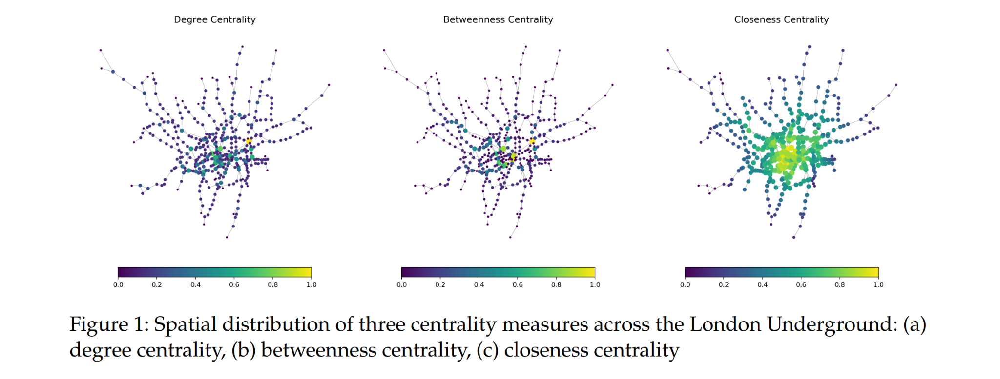
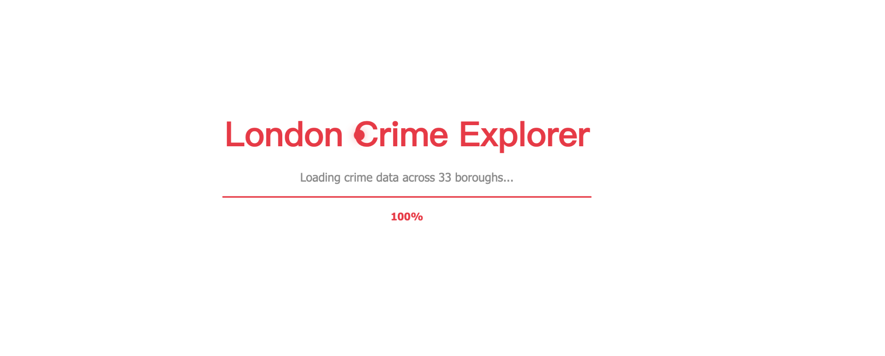
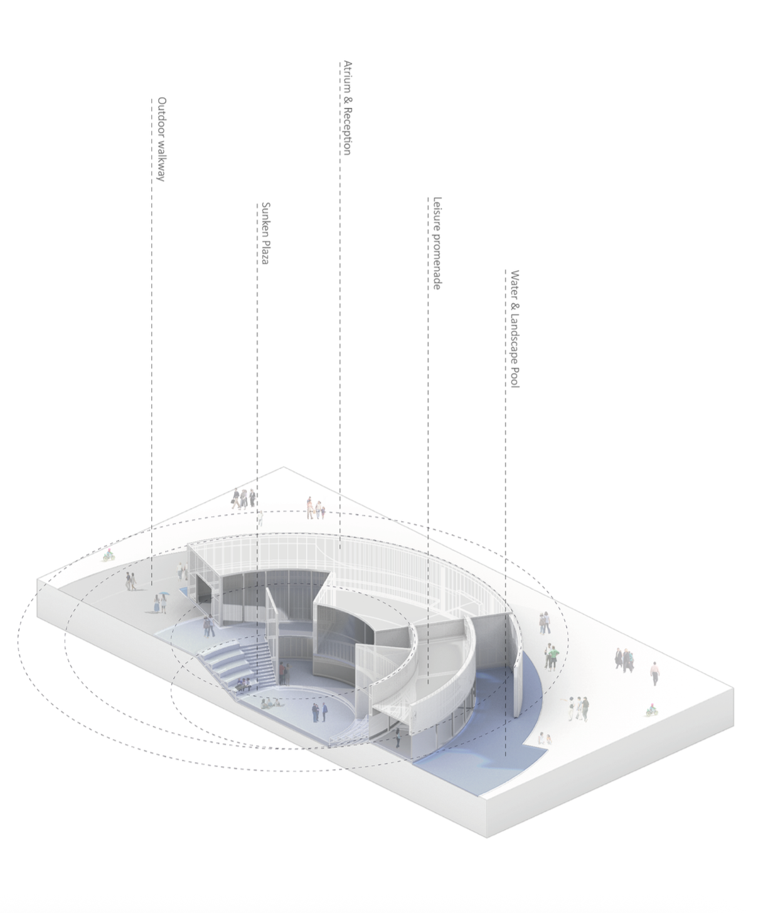
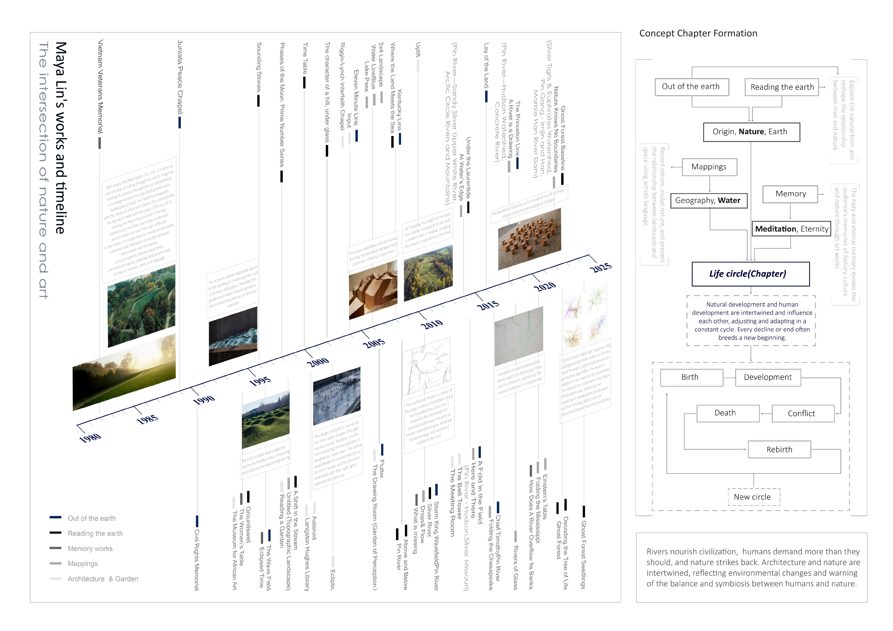
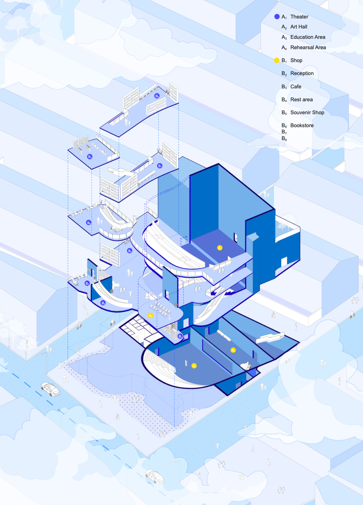
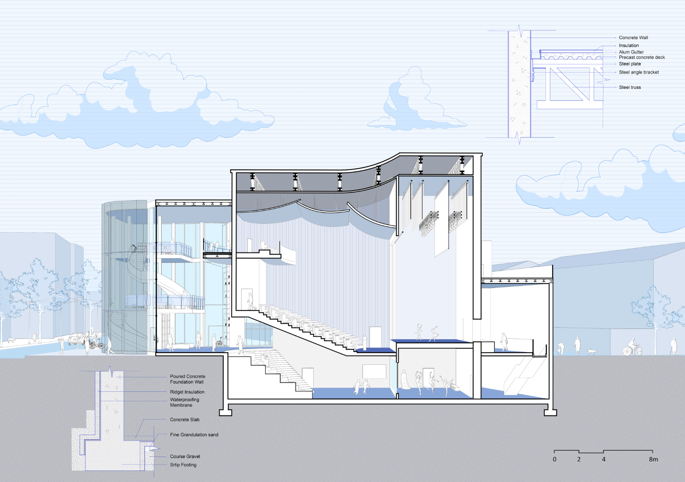
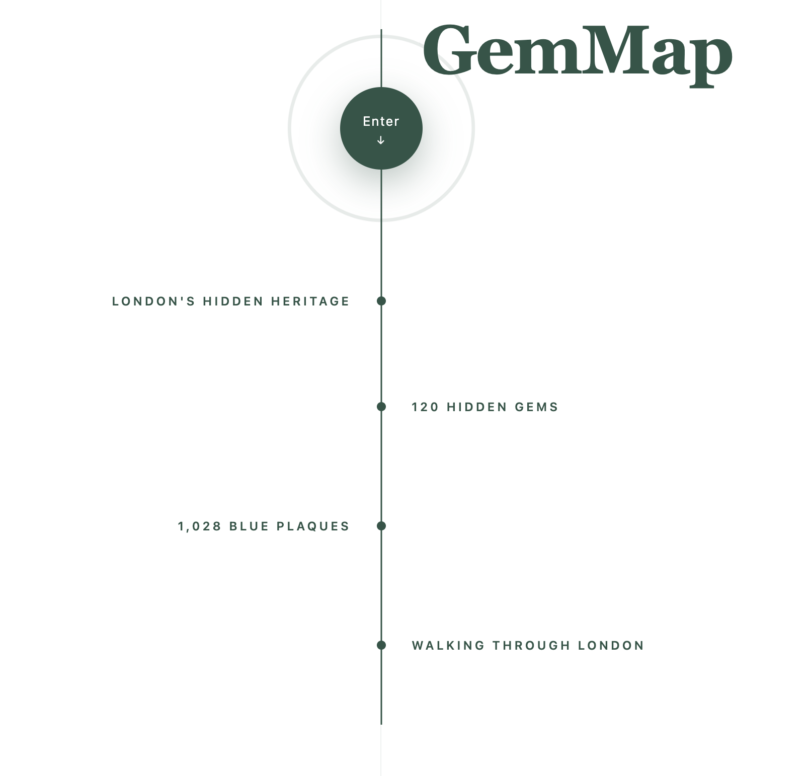
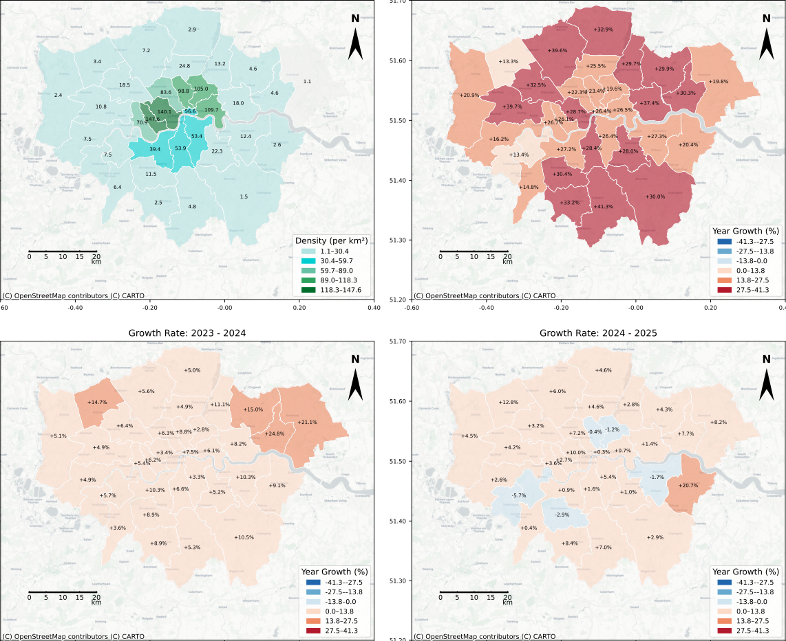

University College London
MRes Urban Spatial Science
MRes Urban Spatial Science
BEng (Hons) Architecture

2026/4 — 2026/5
I modelled the London Underground as a network in Python, using centrality measures to identify critical stations and testing how connectivity changed under random failures and targeted station removals. I also developed a spatial interaction model to compare two potential supermarket locations in Havering, exploring store size, higher travel costs and walking accessibility. Together, the analyses examined how network structure and location choices influence resilience and access.

2026/3 — 2026/4
I built an interactive website to explore recorded crime across London boroughs from February 2024 to January 2026. Using React, I brought together an interactive map and charts so visitors can filter crime categories and dates, compare boroughs and explore monthly trends. The project focused on making a complex dataset easier to navigate while explaining the limitations of borough-level crime counts.
Visit website ↗
2024/7 — 2025/1
An architectural proposal for an art museum in New York, exploring the relationship between nature, memory and urban life. Inspired by water, geological formations and organic growth, the design uses curved spaces and a circular route to connect exhibition areas with a sunken plaza, outdoor walkways and a landscape pool.
Research into Maya Lin’s work informed the concept, tracing connections between landscape, art and environmental memory. A study of her projects developed into a narrative of birth, development, conflict, death and rebirth, shaping the museum’s “Circle of Life”.

The proposal brings these ideas into a sequence of spaces for art, reflection and everyday gathering. The open plaza extends the museum into public life, inviting visitors to move between the building, the city and the landscape.

2024/2 — 2024/5
A theatre proposal at the intersection of Weihai Road and Maoming North Road in Shanghai, responding to a neighbourhood where historic buildings, shopping streets and everyday social life overlap. The project explores how a cultural venue can participate in the area’s changing rhythms from day to night.
The design brings together a theatre, art hall, education and rehearsal spaces with a café, shops and a bookshop. Curved circulation routes and shared spaces connect these activities across several levels, linking performance with places to meet, browse and spend time.

The section shows how the auditorium, foyer and lower-level spaces fit together, alongside studies of the roof and foundations. The proposal treats the theatre as part of the neighbourhood’s daily life, offering spaces for both performances and informal public activity.
Work with lovely people!

GemMap explores London’s hidden heritage through 120 lesser-known places and 1,028 blue plaques, inviting visitors to discover the city’s stories on foot.
Visit website ↗Work with lovely people!

2025/11 — 2025/12
A group study of London’s Airbnb market from 2022 to 2025, examining growth, professional hosting and spatial concentration. Maps and statistical analysis assess which properties could be affected by landlord registration and higher Council Tax, exploring the implications for residents and housing policy.
Phone
+44 7352 203701